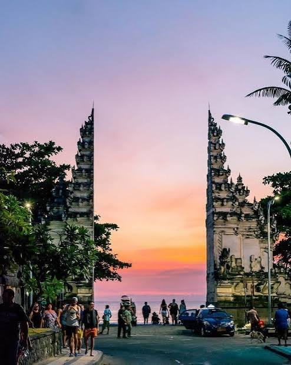

Pantai Kuta adalah salah satu tempat wisata paling terkenal di Pulau Bali. Terletak di sebelah selatan Kota Denpasar, pantai ini menawarkan pemandangan pasir putih yang membentang luas serta ombak yang sangat cocok untuk olahraga selancar (surfing). Setiap harinya, ribuan wisatawan lokal maupun mancanegara berkunjung untuk menikmati suasana pantai yang menyenangkan.
Selain keindahan pasirnya, Pantai Kuta juga sangat terkenal dengan pemandangan matahari terbenam (sunset) yang sangat memukau. Menjelang sore hari, para pengunjung biasanya berkumpul di pinggir pantai untuk menyaksikan detik-detik berubahnya warna langit menjadi keemasan. Fasilitas di sekitar pantai pun sangat lengkap, mulai dari penginapan, restoran, hingga pusat perbelanjaan.
Bagi Anda yang merencanakan liburan ke Bali, menjadikan Pantai Kuta sebagai salah satu destinasi utama adalah pilihan yang sangat tepat. Akses yang mudah dari Bandara International I Gusti Ngurah Rai menjadikan destinasi ini sangat strategis untuk dikunjungi bersama keluarga maupun sahabat.
Baca informasi pariwisata lainnya di: Wonderful Indonesia